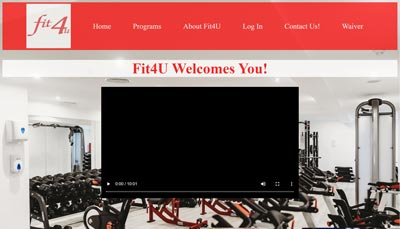
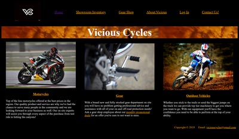
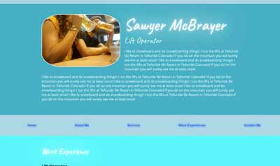
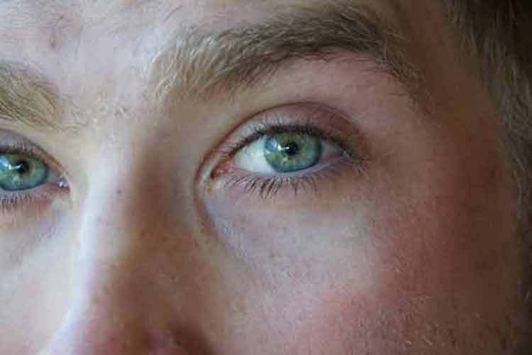

Fit4U was a final project completed in a previous class. There are many things covered in both this class and that one that are similar. I'm finding my skills are improving.

Vicious cycles was designed in a previous class as a larger project.
This is the first project that the class was assigned to do in WEB120. We were tasked with looking at a pre-designed site and trying to re-create it as close as possible.

The resume project is a cumulative effort from WEB210. It added on new features week by week.

The final two pictures are examples of image optimization. (My favorite thing to have learned so far in this course!)